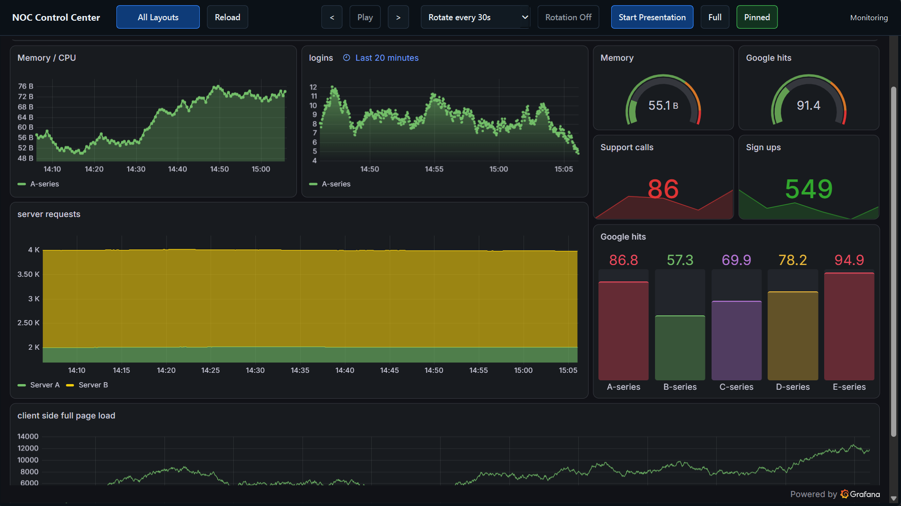
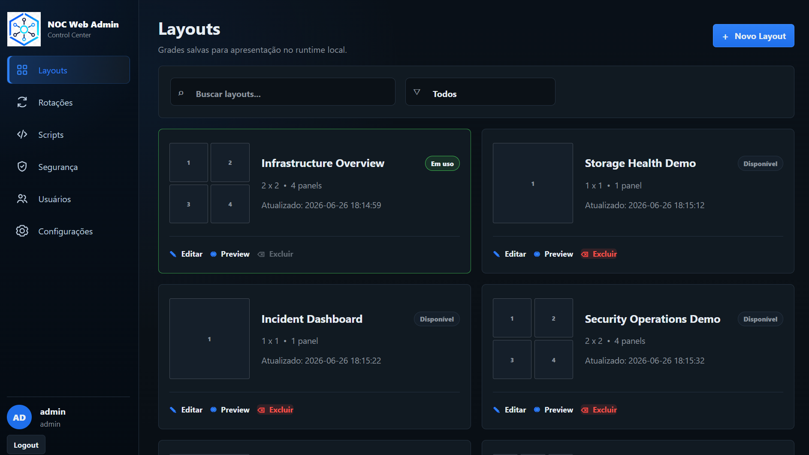
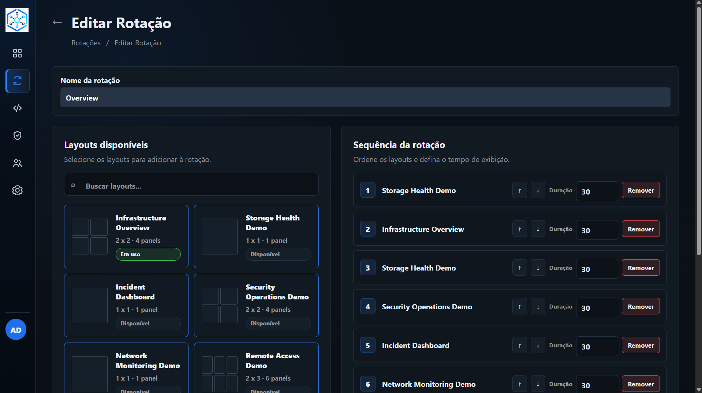

NOC Platform

Confidential internal platform built to support Network Operations Center workflows by centralizing multiple web-based systems into configurable layouts.
View details
This project was developed in a corporate environment to improve NOC operations. It centralizes multiple systems into configurable layouts optimized for monitoring, presentation and operational workflows.
I worked on the admin interface, layout management, desktop runtime, rotation flows, remote access integration and operational automation.
For confidentiality reasons, all screenshots use demo layouts and sanitized data. Source code, real clients, credentials, IP addresses and sensitive infrastructure details are not disclosed.


